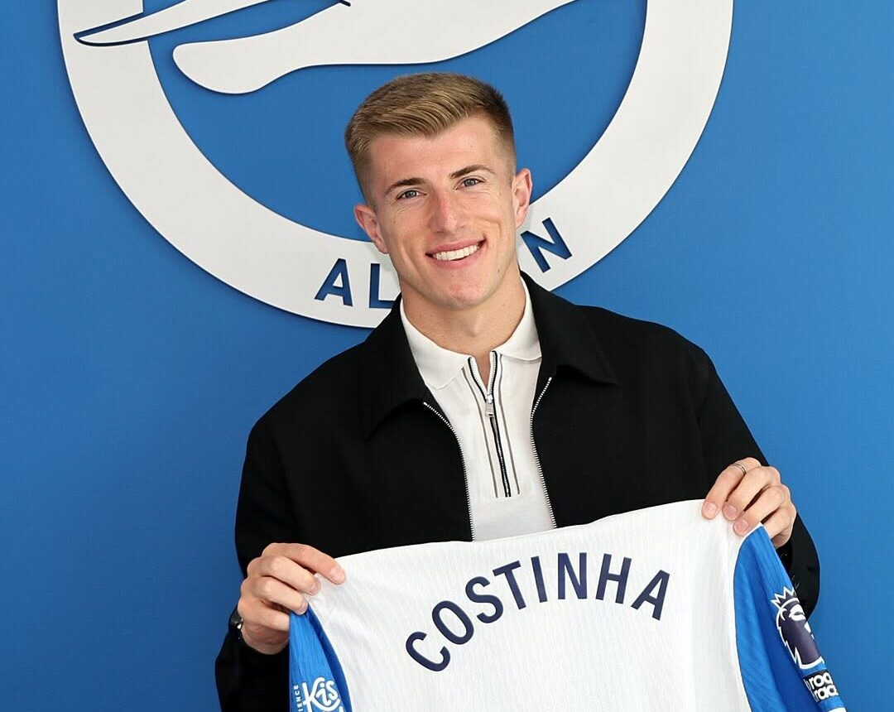
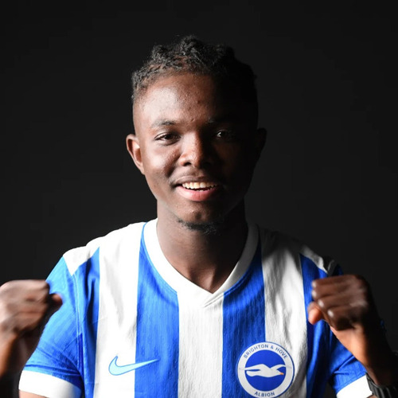
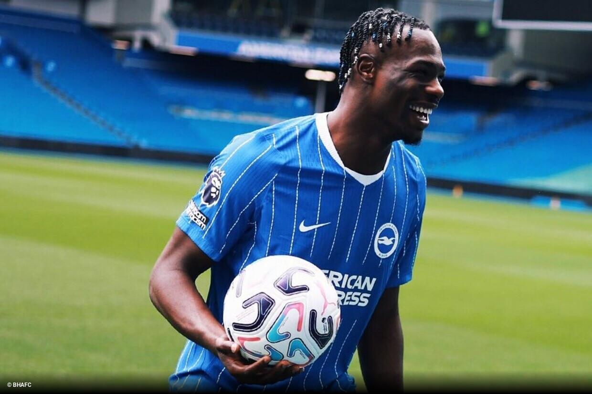

Site oficial | Menu | Torcida | Elenco | Camisa | Cidade
| Nome | Idade | Altura | País |
|---|---|---|---|
| Bart Verbruggen | 24 anos | 1,94 m | Holanda |
| Jason Steele | 36 anos | 1,88 m | Inglaterra |
| Tom McGill | 26 anos | 1,85 m | Canadá |
| Carl Rushworth (emprestado) | 25 anos | 1,88 m | Inglaterra |
| Nils Ramming | 19 anos | 1,94 m | Inglaterra |
| Nome | Idade | Altura | País |
|---|---|---|---|
| Igor Júlio | 28 anos | 1,85 m | Brasil |
| Eiran Cashin | 24 anos | 1,80 m | Inglaterra |
| Lewis Dunk | 34 anos | 1,92 m | Inglaterra |
| Oliver Boscagli | 28 anos | 1,81 m | França |
| Ferdi Kadıoğlu | 26 anos | 1,74 m | Turquia |
| Mats Wieffer | 26 anos | 1,88 m | Holanda |
| Maxim De Cuyper | 25 anos | 1,82 m | Bélgica |
| Diego Coppola (emprestado) | 22 anos | 1,92 m | Itália |
| Freddie Simmonds | 18 anos | 1,88 m | Inglaterra |
| Nome | Idade | Altura | País |
|---|---|---|---|
| Solly March | 32 anos | 1,80 m | Inglaterra |
| Brajan Gruda (emprestado) | 22 anos | 1,78 m | Alemanha |
| Jack Hinshelwood | 21 anos | 1,81 m | Inglaterra |
| Carlos Baleba | 22 anos | 1,83 m | Camarões |
| Kaoru Mitoma | 29 anos | 1,78 m | Japão |
| Diego Gómez | 23 anos | 1,83 m | Paraguai |
| Yasin Ayari | 22 anos | 1,72 m | Suécia |
| Pascal Gross | 35 anos | 1,81 m | Alemanha |
| Matt O'Riley | 25 anos | 1,88 m | Dinamarca |
| Facundo Buonanotte (emprestado) | 21 anos | 1,76 m | Argentina |
| Charlie Tasker | 20 anos | 1,85 m | Inglaterra |
| Harry Howell | 18 anos | 1,80 m | Inglaterra |
| Nome | Idade | Altura | País |
|---|---|---|---|
| Stefanos Tzimas | 20 anos | 1,84 m | Grécia |
| Georginio Rutter | 24 anos | 1,82 m | França |
| Yankuba Minteh | 22 anos | 1,80 m | Gâmbia |
| Tommy Watson (emprestado) | 20 anos | 1,90 m | Inglaterra |
| Charalampos Kostoulas | 19 anos | 1,85 m | Grécia |
| Evan Ferguson | 21 anos | 1,83 m | Irlanda |
| Amario Cozier-Duberry | 21 anos | 1,70 m | Inglaterra |
| Mark O'Mahony | 21 anos | 1,75 m | Irlanda |
| Nehemiah Oriola | 19 anos | ---- | Reino Unido |
| Ibrahim Osman | 21 anos | 1,78 m | Gana |





| Nome | Equipe atual |
|---|---|
| Alexis Mac Allister | Liverpool |
| Moisés Caicedo | Chelsea |
| Robert Sánchez | Chelsea |
| João Pedro | Chelsea |
| Danny Welbeck | Chelsea |
| Valentín Barco | Chelsea |
| Viktor Gyökeres | Arsenal |
| Ben White | Arsenal |
| Yves Bissouma | Tottenham |
| Jan Paul Van Hecke | Tottenham |
| Dan Burn | New Castle |
| Marc Cucurella | Real Madrid |
| Pervis Estupiñán | Milan |
| Ansu Fati | Monoco |
| Julio Ensiso | Strasbourg |
| Deniz Undav | VfB Stuttgart |
| Leandro Trossard | Besiktas |
| Billy Gilmour | Napoli |
| James Milner | Aposentado |
| Glenn Murry | Aposentado |
| Jöel Veltman | Sem clube |